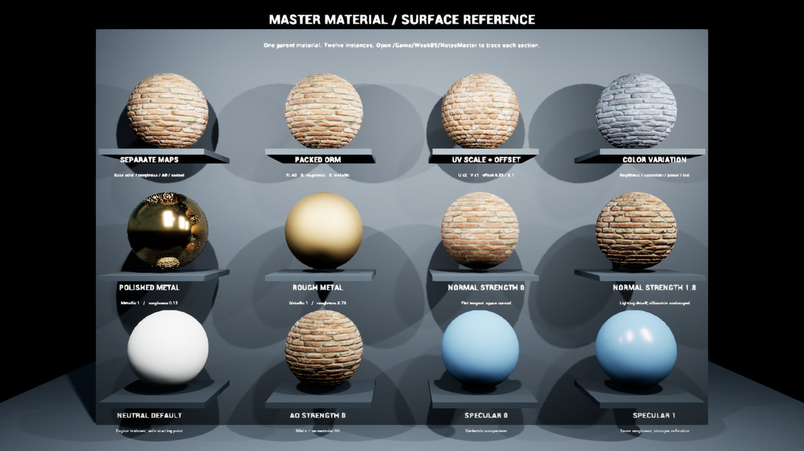
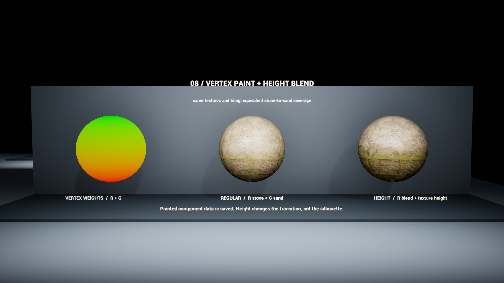
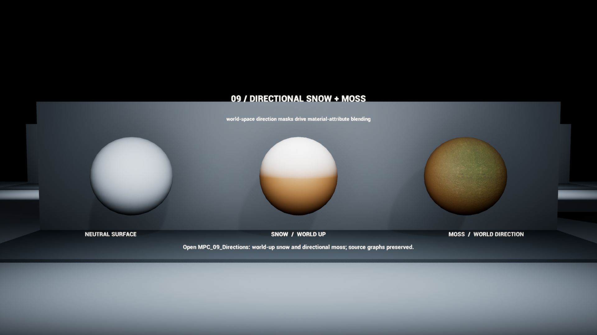
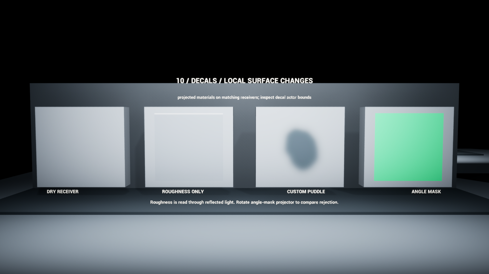
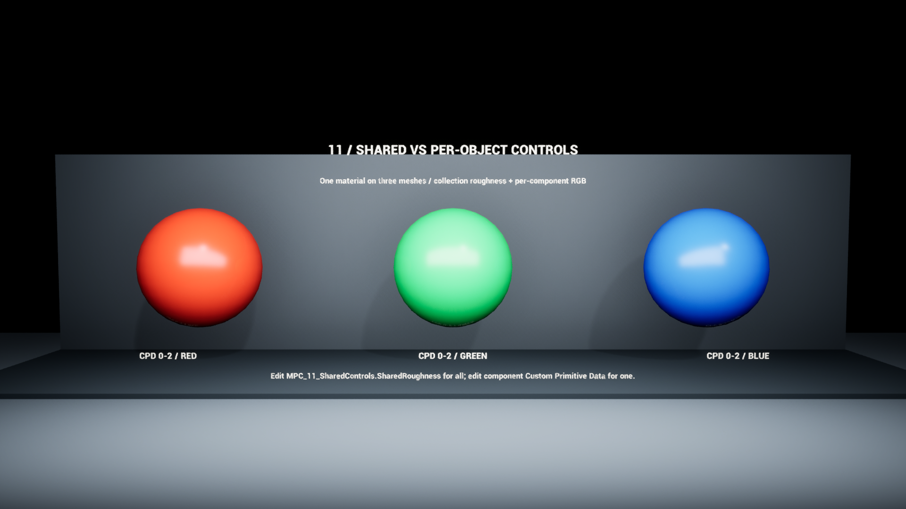
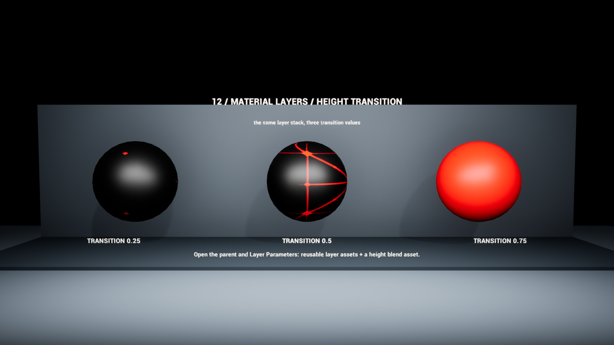

Week 9 · Shaders and material systems
Today: finish your original shader
Continue the shader assignment begun last week. Choose one unfinished feature or problem, improve it, and save a clear result with a readable graph and brief explanation. Use the existing assignment brief for formal requirements.
The reference stations, A–D comparisons and experiment record below are optional support. You do not need to complete a new station exercise. Keep useful changes in your own shader; reset only temporary reference tests.
Use these references to finish and explain your existing shader.
Open Week 9 slides · Download the handouts
Start the 25-minute lab · Open the shader cheat sheet and experiment record
Today’s agenda
| Time | Activity |
|---|---|
| 4:30–4:45 | Intro, agenda, tech setup |
| 4:45–6:00 | Guest speakers |
| 6:00–6:15 | Break |
| 6:15–6:25 | Quick material walkthrough |
| 6:25–6:50 | Finish your original shader |
| 6:50–7:00 | Final assignment overview |
Optional instructor reference project
Continue in your own shader project. The images below document the instructor’s demo; its editable course-source assets are not included in this public download. Use the slide and image references when you do not have that project.
Open Week09MaterialLab.uproject in Unreal Engine 5.7. The reference wing is in /Game/Week09/Maps/W09_MaterialGallery. The surface master board is in /Game/Week09/Maps/W09_MasterReference.
In the gallery Outliner, expand ReferenceWing, right-click a numbered reference camera and choose Pilot. Stop piloting before moving the camera freely.
One parent, several surface variations

Explore the reference stations
Use a station if it helps your shader. Expand it to inspect the prepared view.
08 · Painted weights and height blend
MI_08_HeightBlend · Blend Contrast
Compare the boundary while paint, textures and tiling stay fixed.

09 · Directional snow and moss
MPC_09_Directions · Snow_Direction / Moss_Direction
Moss normalizes a nonzero world direction; snow expects a unit direction. Compare coverage on an asymmetric mesh; this changes a shared collection.

10 · Local decal changes
MI_10_RoughnessDecal · Roughness
Check projection bounds and the receiver before judging the surface response.

11 · Shared and per-component data
MPC_11_SharedControls · SharedRoughness / component CPD 0–2
Restore the collection before testing one component’s RGB.

12 · Reusable material layers
MI_12_Layers_0 / 1 / 2 · Layer Parameters
Inspect blend-associated Transition at index 0: staged values 0.25 / 0.5 / 0.75.

Final project · rough outline
Explore a technical-art question and build a focused result: a tool, shader, procedural content generation (PCG) system, effect, workflow or another exploration. Work solo or in a group; identify each person’s contribution. A tool is optional.
Final presentation: teach the class what you learned and demonstrate what you made. Explain the process, evidence, tradeoffs and limitations. Plan clear visuals and a breakdown so the work can become a portfolio piece.
Start with a question, minimum useful result, test and teaching goal. Use the published assignment brief for deadlines and submission details.